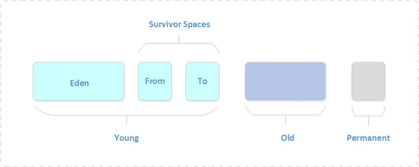

Java虚拟机根据对象存活的周期不同，把堆内存划分为几块，一般分为新生代、老年代和永久代（对HotSpot虚拟机而言），这就是JVM的内存分代策略。
为什么要分代？
堆内存是虚拟机管理的内存中最大的一块，也是垃圾回收最频繁的一块区域，我们程序所有的对象实例都存放在堆内存中。给堆内存分代是为了提高对象内存分配和垃圾回收的效率。试想一下，如果堆内存没有区域划分，所有的新创建的对象和生命周期很长的对象放在一起，随着程序的执行，堆内存需要频繁进行垃圾收集，而每次回收都要遍历所有的对象，遍历这些对象所花费的时间代价是巨大的，会严重影响我们的GC效率，这简直太可怕了。
有了内存分代，情况就不同了，新创建的对象会在新生代中分配内存，经过多次回收仍然存活下来的对象存放在老年代中，静态属性、类信息等存放在永久代中，新生代中的对象存活时间短，只需要在新生代区域中频繁进行GC，老年代中对象生命周期长，内存回收的频率相对较低，不需要频繁进行回收，永久代中回收效果太差，一般不进行垃圾回收，还可以根据不同年代的特点采用合适的垃圾收集算法。分代收集大大提升了收集效率，这些都是内存分代带来的好处。
内存分代划分
Java虚拟机将堆内存划分为新生代、老年代和永久代，永久代是HotSpot虚拟机特有的概念，它采用永久代的方式来实现方法区，其他的虚拟机实现没有这一概念，而且HotSpot也有取消永久代的趋势，在JDK 1.7中HotSpot已经开始了“去永久化”，把原本放在永久代的字符串常量池移出。永久代主要存放常量、类信息、静态变量等数据，与垃圾回收关系不大，新生代和老年代是垃圾回收的主要区域。内存分代示意图如下：

新生代（Young）
新生成的对象优先存放在新生代中，新生代对象朝生夕死，存活率很低，在新生代中，常规应用进行一次垃圾收集一般可以回收70% ~ 95% 的空间，回收效率很高。
HotSpot将新生代划分为三块，一块较大的Eden空间和两块较小的Survivor空间，默认比例为8：1：1。划分的目的是因为HotSpot采用复制算法来回收新生代，设置这个比例是为了充分利用内存空间，减少浪费。新生成的对象在Eden区分配（大对象除外，大对象直接进入老年代），当Eden区没有足够的空间进行分配时，虚拟机将发起一次Minor GC。
GC开始时，对象只会存在于Eden区和From Survivor区，To Survivor区是空的（作为保留区域）。GC进行时，Eden区中所有存活的对象都会被复制到To Survivor区，而在From Survivor区中，仍存活的对象会根据它们的年龄值决定去向，年龄值达到年龄阀值（默认为15，新生代中的对象每熬过一轮垃圾回收，年龄值就加1，GC分代年龄存储在对象的header中）的对象会被移到老年代中，没有达到阀值的对象会被复制到To Survivor区。接着清空Eden区和From Survivor区，新生代中存活的对象都在To Survivor区。接着， From Survivor区和To Survivor区会交换它们的角色，也就是新的To Survivor区就是上次GC清空的From Survivor区，新的From Survivor区就是上次GC的To Survivor区，总之，不管怎样都会保证To Survivor区在一轮GC后是空的。GC时当To Survivor区没有足够的空间存放上一次新生代收集下来的存活对象时，需要依赖老年代进行分配担保，将这些对象存放在老年代中。
老年代（Old）
在新生代中经历了多次（具体看虚拟机配置的阀值）GC后仍然存活下来的对象会进入老年代中。老年代中的对象生命周期较长，存活率比较高，在老年代中进行GC的频率相对而言较低，而且回收的速度也比较慢。
永久代（Permanent）
永久代存储类信息、常量、静态变量、即时编译器编译后的代码等数据，对这一区域而言，Java虚拟机规范指出可以不进行垃圾收集，一般而言不会进行垃圾回收。
Minor GC 和 Full GC的区别
新生代GC（Minor GC）：Minor GC指发生在新生代的GC，因为新生代的Java对象大多都是朝生夕死，所以Minor GC非常频繁，一般回收速度也比较快。当Eden空间不足以为对象分配内存时，会触发Minor GC。
老年代GC（Full GC/Major GC）：Full GC指发生在老年代的GC，出现了Full GC一般会伴随着至少一次的Minor GC（老年代的对象大部分是Minor GC过程中从新生代进入老年代），比如：分配担保失败。Full GC的速度一般会比Minor GC慢10倍以上。当老年代内存不足或者显式调用System.gc()方法建议JVM回收时，若JVM真的回收会触发Full GC。